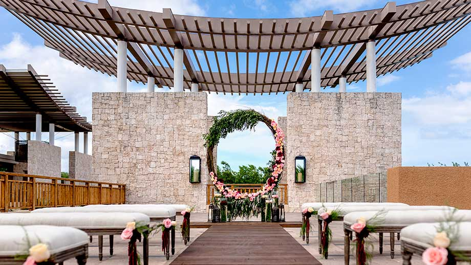

Why choose GREEN HOTEL for your Event?
Our elegant lobby have astonishing decors and unparalleled views. They boast open span interiors complemented by panoramic windows and spacious outdoor decks. Professional and Dedicated Planners; We have a talented planning and service team to help you plan your dream wedding from start to finish. We can help with the timing, decor ideas, menu selection and connect you with outside vendors so you have that much less to worry about! Tasty Menu; A variety of catering menus gives you flexibility on the style of event you can have on board. We can accommodate stand-up receptions as well as sit down dining. We also have a licensed bar with lots of tasty cocktail options.
wedding
What makes us stand out?
- Customization.
- Convenience.
- Dedicated Planners.
About cooking
Our Executive Chef, Tany Segura Torres has created a variety of tasty menus to suit all your needs. He spends numerous hours fine tuning all of his recipes until ultimate flavor perfection is reached. From formal sit-down dinners to casual stand up receptions, we can do it all! If you need a little bit of customization do let us know we will do our best to accommodate it.